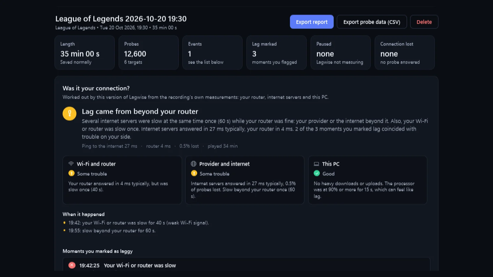
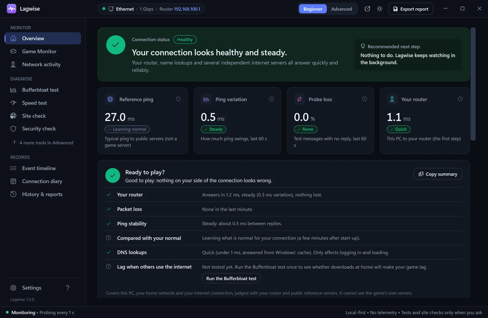
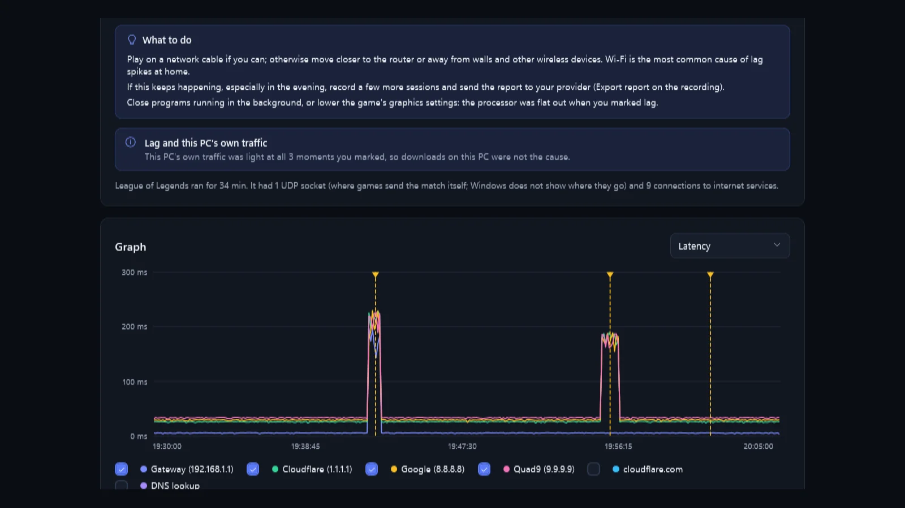

Was it my connection?
Lagwise watches every step between your PC and the internet while you play, then tells you in plain words where the lag came from: your Wi-Fi or router, your provider, this PC, or further away.

One ping number can't tell you where lag starts
Lagwise measures the whole chain at once, every second, and compares each step with what's normal for your connection.
This PC
Processor load and its own downloads while you play.
Wi-Fi & router
How fast and steady your router answers, Wi-Fi signal, repeaters.
Your provider
Several independent internet servers, checked side by side.
The internet
Name lookups, routes and the wider path beyond your provider.
Everything you need to settle the lag argument
Simple answers in Beginner mode, every measurement in Advanced mode.
Works with any game
Finds the games Windows already knows about, records while one runs and saves when it closes. Press Ctrl+Shift+F9 when it lags.
A verdict, not a graph to decode
After each game: where the trouble was, what happened at every moment you marked, and what to try next.
Speed & lag under load
A speed test plus a bufferbloat test that shows whether downloads at home make your game lag, graded A+ to F.
Route trace
Follow your traffic hop by hop to see where delay starts, with the network behind each hop.
Site & security checks
Is a site down or blocked on the way? Is your DNS honest, your Wi-Fi protected, your firewall on? Read-only.
Made for Windows
Mini overlay over your game, taskbar jump list and status badge, tray icon, sleep and wake handled, sharp on every screen.

Ready to play?
A glance tells you whether anything on your side looks wrong right now, judged against your own normal rather than fixed limits.
- Router, loss, stability and name lookups, each with a reason
- Copy a short summary to paste into a chat or support ticket
- Desktop alerts when the connection drops and comes back

Proof you can show your provider
Every recording keeps its graph, the moments you marked and a verdict. Export it as a report when you need to call your provider.
- See which hours of the day your connection is worst
- Speed and bufferbloat results kept over time
- Reports hide your home addresses unless you choose otherwise
The same Lagwise, wherever you get it
Every feature is in both. The Microsoft Store edition adds convenience, and buying it supports Lagwise's development.
Free download Free
The portable app from GitHub, open source.
- Unzip and run, no install
- Update by downloading the new version
- Not code-signed: Windows shows a warning the first time
Microsoft Store Supports development
The very same app, installed and kept up to date by Windows.
- Automatic updates
- Signed by Microsoft: no warning
- One-click install and uninstall
Nothing you measure ever leaves your PC
Lagwise has no account and no servers of its own. It talks only to your router and the public test servers you can see in Settings.
What Lagwise doesn't claim: it doesn't measure your game's own server.
Windows doesn't show where a game sends its match traffic without administrator rights, so Lagwise measures your connection to the internet and says so, instead of showing a made-up "server ping".
Good to know
Is Lagwise free?
Yes. The download on GitHub is free and open source under the MIT licence.
Do I need to install anything?
No. Unzip and run Lagwise.exe on Windows 10 or 11 (64-bit). It carries everything it needs, never asks for administrator rights and keeps its data in your own Windows profile.
Windows says "Windows protected your PC". Is it safe?
That warning appears for programs that aren't code-signed yet. Choose More info, then Run anyway. You can check the download against the SHA-256 checksum on the release page, and the full source code is public.
Does it work on Wi-Fi, with repeaters or a mesh?
Yes. Lagwise reads your Wi-Fi details from Windows and judges the router step with stricter or looser limits for cable and Wi-Fi. A repeater or mesh unit counts as part of "Wi-Fi and router".
Does it work with a VPN?
Yes. Lagwise notices when your traffic goes through a VPN or tunnel and names it in the verdict, so "beyond your router" also includes the VPN.
Does it slow down my game?
No. Its test messages are tiny, about one a second to each server. Only the speed and bufferbloat tests use real bandwidth, and only when you start them.
Next time it lags, you'll know why
Free for Windows 10 and 11. Your data stays yours.